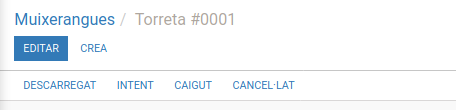

Deixa que el programa calcule la millor alineació pel tronc. Després modifica les posicions que cregues convenients.
Ja no cal que ompligues manualment totes les posicions de la pinya.
S'ha acabat el tindre repetida la mateixa persona en diferents posicions.
El programa calcula les posicions des de la més prioritària fins a l'últim cordó❗
[Amb el mòdul "Pinya Telegram"]
Podràs enviar missatges i convocatòries dels assajos per Telegram
Els estats "Descarregada", "Intentada", "Caiguda" i "Canceŀlada" es gestionen des de la vista de les muixerangues, però per a poder accedir a eixos estats, l'assaig o actuació on està la figura cal que estiga en estat "Fet".
